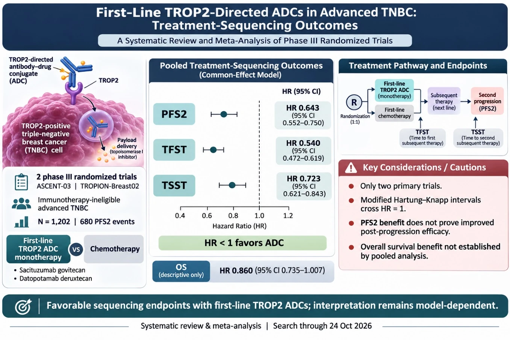
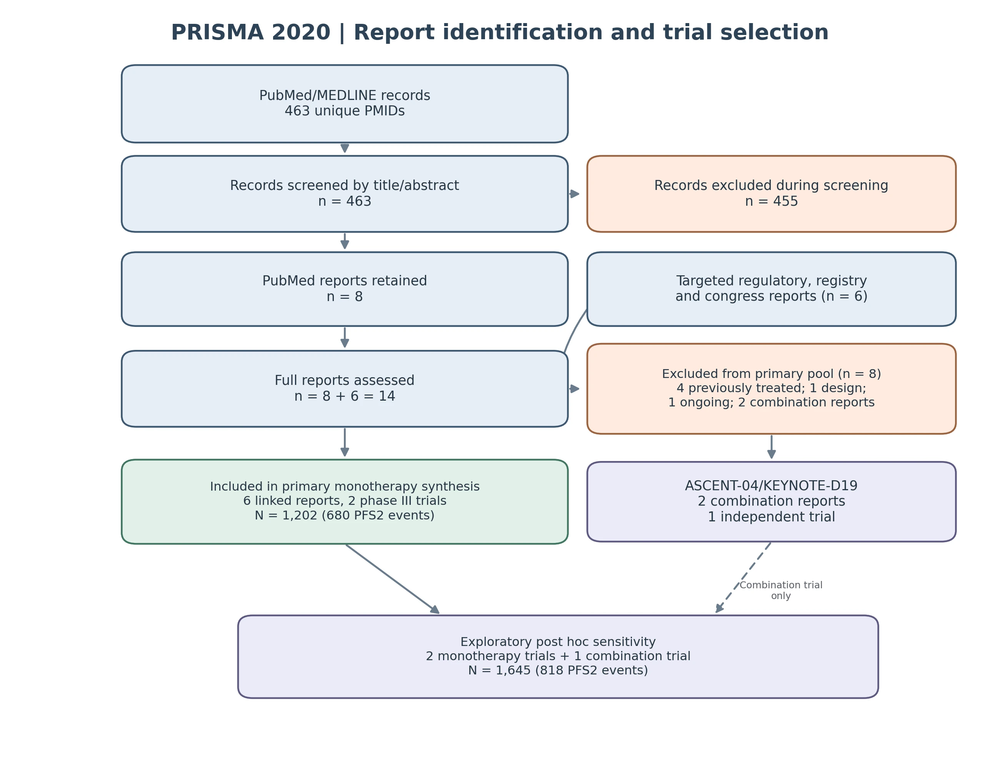
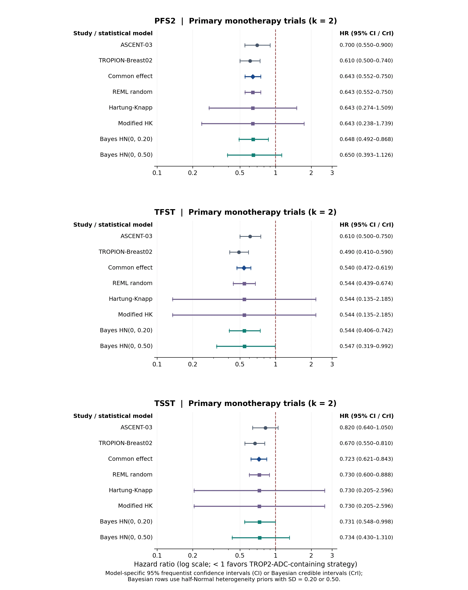
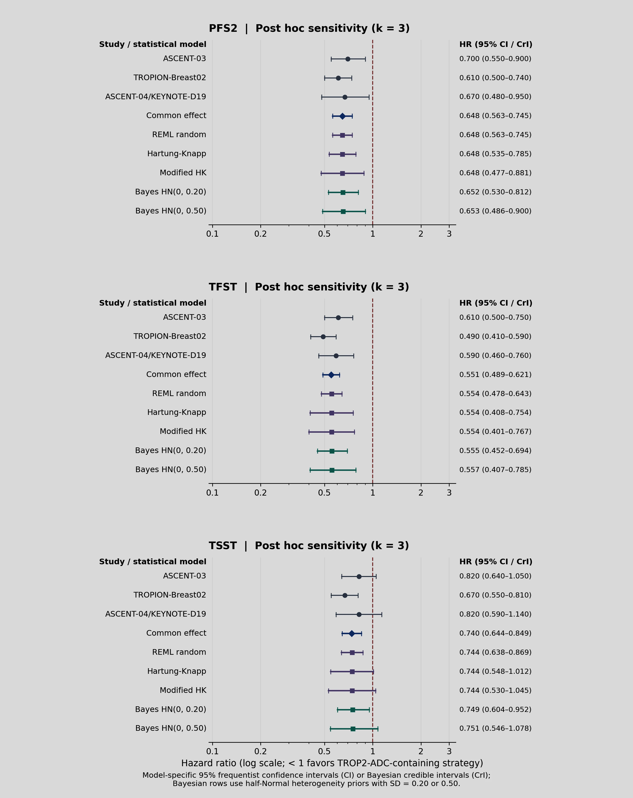

Abstract
Objective: Trophoblast cell-surface antigen 2 (TROP2)-directed antibody–drug conjugates (ADCs) have demonstrated improvements in progression-free survival (PFS) as first-line treatment for advanced triple-negative breast cancer (TNBC). We evaluated whether these benefits extend to subsequent treatment-related endpoints while distinguishing such outcomes from evidence of overall survival (OS) benefit.
Methods: We searched published literature, clinical trial registries, conference proceedings, and regulatory documents through October 24, 2026. Two phase III randomized trials comparing first-line ADC monotherapy with chemotherapy in patients with advanced TNBC who were not candidates for immunotherapy were included. Progression-free survival after the next line of treatment (PFS2), time to first subsequent therapy (TFST), and time to second subsequent therapy (TSST) were pooled using a common-effect model. Sensitivity analyses included restricted maximum likelihood (REML) random-effects estimation, conventional and modified Hartung–Knapp methods, and Bayesian random-effects models with alternative heterogeneity priors. A third trial involving pembrolizumab was examined in a post hoc analysis. OS pooling was descriptive. The review protocol was not prospectively registered.
Results: The two primary trials included 1,202 patients, with 680 PFS2 events. Common-effect pooled hazard ratios (HRs; 95% confidence intervals [CIs]) favored ADC monotherapy for PFS2 (0.643; 0.552–0.750), TFST (0.540; 0.472–0.619), and TSST (0.723; 0.621–0.843). REML estimates were similar. However, Hartung–Knapp and modified Hartung–Knapp confidence intervals crossed the null value for all three endpoints. Bayesian estimates generally favored ADC therapy, although credible intervals were sensitive to the assumed heterogeneity prior. Post hoc inclusion of the pembrolizumab-containing trial yielded a pooled PFS2 HR of 0.648 (95% CI, 0.563–0.745). Descriptive pooling of OS produced an HR of 0.860 (95% CI, 0.735–1.007).
Conclusions: First-line TROP2-directed ADCs were associated with favorable subsequent treatment-related outcomes compared with chemotherapy. However, the strength of pooled evidence was sensitive to statistical assumptions, particularly with only two primary trials. These findings do not establish improved efficacy of subsequent therapies, a class-wide effect, or an overall survival benefit attributable to treatment sequencing. Larger evidence bases and mature survival data are needed to establish the clinical relevance of these endpoints.
Keywords: Triple-negative breast cancer; TROP2; antibody–drug conjugates; sacituzumab govitecan; datopotamab deruxtecan; PFS2; meta-analysis
Graphical Abstract

Highlights
- Two phase III trials involving 1,202 patients evaluated first-line TROP2-directed ADCs in advanced triple-negative breast cancer.
- TROP2-directed ADCs favored progression-free survival after subsequent therapy (PFS2; pooled HR 0.643, 95% CI 0.552–0.750).
- Time to first (TFST; HR 0.540) and second subsequent therapy (TSST; HR 0.723) also favored ADC treatment.
- With only two primary trials, modified Hartung–Knapp confidence intervals crossed the null for all three endpoints.
- Favorable treatment-sequencing outcomes did not establish improved post-progression efficacy or an overall survival benefit.
1. Introduction
Triple-negative breast cancer (TNBC), defined clinically by the absence of estrogen receptor and progesterone receptor expression and lack of human epidermal growth factor receptor 2 (HER2) overexpression or gene amplification, accounts for approximately 10% to 15% of all breast carcinomas and carries an aggressive clinical trajectory. For patients with unresectable locally advanced or metastatic disease whose tumors express programmed death-ligand 1 (PD-L1; combined positive score [CPS] ≥10), pembrolizumab plus chemotherapy has been an established first-line regimen. In June 2026, the US Food and Drug Administration (FDA) also approved sacituzumab govitecan plus pembrolizumab for this PD-L1-positive population [16]. For patients who are not candidates for PD-1/PD-L1 inhibitor therapy, cytotoxic chemotherapy historically represented a principal first-line option, with median progression-free survival (PFS) of approximately 5 to 7 months in the control arms of contemporary randomized trials [1,2]. However, the US treatment landscape changed in 2026: the FDA approved datopotamab deruxtecan in May and sacituzumab govitecan monotherapy in June for first-line treatment of immunotherapy-ineligible advanced TNBC [16,17]. These approvals establish first-line ADC options in the United States, although their availability and implementation may differ across healthcare settings.
Trophoblast cell-surface antigen 2 (TROP2) is a transmembrane glycoprotein highly expressed in most triple-negative breast cancers (TNBCs). Two TROP2-targeted antibody–drug conjugates (ADCs), sacituzumab govitecan (SG) and datopotamab deruxtecan (Dato-DXd), deliver topoisomerase I inhibitor payloads and have recently been evaluated against standard chemotherapy in global, randomized phase III trials involving patients with previously untreated, advanced TNBC who were not candidates for immunotherapy.
In the ASCENT-03 trial, SG significantly improved progression-free survival (PFS), as assessed by blinded independent central review (BICR), compared with physician's choice of chemotherapy (median PFS, 9.7 vs. 6.9 months; hazard ratio [HR], 0.62; 95% confidence interval [CI], 0.50–0.77; P < 0.001) [1].
Similarly, in the TROPION-Breast02 trial, Dato-DXd significantly improved both BICR-assessed PFS (median, 10.8 vs. 5.6 months; HR, 0.57; 99% CI, 0.44–0.73; P < 0.0001) and overall survival (OS; median, 23.7 vs. 18.7 months; HR, 0.79; 95.01% CI, 0.64–0.98; P = 0.029) compared with investigator's choice of chemotherapy [2].
Evaluating long-term comparative effectiveness across contemporary first-line ADC trials is complicated by wide differences in protocol-permitted treatment crossover and off-study access to subsequent ADCs. Intermediate treatment-sequencing endpoints—specifically progression-free survival after the next line of treatment (PFS2), time to first subsequent therapy or death (TFST), and time to second subsequent therapy or death (TSST)—capture the patient trajectory across the first and second treatment switches. Defined by the European Medicines Agency (EMA) as the time from initial randomization to objective tumor progression on next-line treatment or death from any cause, PFS2 reflects the cumulative durability of the initial treatment strategy and its interaction with second-line therapy. Because the time origin of PFS2 is randomization rather than the date of first progression, a PFS2 benefit cannot by itself isolate post-progression pharmacologic activity from the initial first-line PFS gain. In 2026, dedicated secondary analyses from ASCENT-03 and TROPION-Breast02 reported trial-level hazard ratios for PFS2, TFST, and TSST alongside detailed post-progression treatment exposure [3,4].
The validity of PFS2 as a trial-level surrogate for OS in metastatic breast cancer remains context-dependent. A 2026 trial-level meta-epidemiological evaluation by Filis et al. demonstrated only a moderate correlation between PFS2 and OS hazard ratios across randomized breast cancer trials and noted that available trial counts were insufficient to establish TNBC-specific surrogacy [5]. While prior conference network meta-analyses and trial commentaries have focused on primary first-line PFS and OS or discussed crossover in ASCENT-03 [6,7], a comprehensive quantitative synthesis of PFS2, TFST, and TSST across phase III first-line TROP2-ADC trials has not been conducted.
Here, we performed an aggregate-data meta-analysis of phase III randomized trials to quantify the effect of first-line TROP2-directed ADC monotherapy versus cytotoxic chemotherapy on PFS2 (primary outcome) and on TFST and TSST (secondary outcomes) in immunotherapy-ineligible advanced TNBC. We also performed an exploratory three-trial sensitivity analysis incorporating the phase III ASCENT-04/KEYNOTE-D19 trial in PD-L1-positive disease, in which both arms received pembrolizumab. This additional analysis was intended to examine the consistency of the observed sequencing-endpoint associations across the evaluated treatment settings, rather than to establish a class-wide or overall survival effect.
2. Materials and Methods
2.1. Study Design and Protocol
This aggregate-data meta-analysis was conducted in accordance with the Cochrane Handbook for Systematic Reviews of Interventions and reported following the Preferred Reporting Items for Systematic Reviews and Meta-Analyses (PRISMA) 2020 statement [8,9]. The research question was structured using the Population, Intervention, Comparator, Outcomes, and Study design (PICOS) framework. The primary objective was to estimate the intention-to-treat effect of assignment to first-line TROP2-directed ADC monotherapy versus cytotoxic chemotherapy on the hazard of second disease progression or death (PFS2) measured from randomization. Secondary quantitative objectives were to estimate pooled treatment effects on TFST and TSST and to contextualize these sequencing endpoints alongside first-line PFS, OS, post-progression ADC crossover, exploratory central nervous system (CNS) subgroup outcomes, and safety. The review protocol was not prospectively registered in PROSPERO, and no publicly time-stamped statistical analysis plan was deposited before data synthesis. Consequently, the analysis incorporating the additional ASCENT-04/KEYNOTE-D19 trial is described as an exploratory post hoc sensitivity analysis rather than as prospectively prespecified. Because this study synthesized publicly available, anonymized aggregate trial-level data, institutional review board approval and patient informed consent were not required.
2.2. Data Sources and Search Strategy
We systematically searched PubMed/MEDLINE, ClinicalTrials.gov, EMA European Public Assessment Reports (EPAR), and proceedings of the American Society of Clinical Oncology (ASCO) Annual Meeting and European Society for Medical Oncology (ESMO) Congress through October 24, 2026. Reference lists of eligible trial publications, systematic reviews, and methodological commentaries were manually screened to ensure complete capture of companion reports.
The PubMed/MEDLINE search strategy combined Medical Subject Headings (MeSH) and title/abstract keywords for triple-negative breast cancer, TROP2, antibody-drug conjugates, sacituzumab govitecan, datopotamab deruxtecan, and sacituzumab tirumotecan (full search syntax in Supplementary Methods S1). Endpoint-specific terms for PFS2, TFST, or TSST were intentionally omitted from the primary database query so that all phase III randomized trials would be retrieved even when sequencing endpoints were reported solely in subsequent congress presentations or regulatory dossiers. Targeted supplementary searches queried trial registration identifiers (NCT05382299, NCT05374512, NCT05382286, NCT06841354) and study acronyms (ASCENT-03, TROPION-Breast02, ASCENT-04, KEYNOTE-D19, TroFuse-011, OptiTROP-Breast01).
2.3. Eligibility Criteria
Trials were eligible for the primary monotherapy meta-analysis if they satisfied four criteria: (1) phase III randomized controlled trial design; (2) enrolment of adult patients (aged 18 years or older) with previously untreated, unresectable locally advanced, inoperable locally recurrent, or metastatic TNBC for whom PD-1/PD-L1 immune checkpoint blockade was not a treatment option; (3) random assignment to first-line TROP2-directed ADC monotherapy versus standard cytotoxic chemotherapy without concomitant immunotherapy; and (4) reporting of trial-level hazard ratios and 95% confidence intervals (CIs) for PFS2, TFST, or TSST.
In accordance with trial eligibility criteria, immunotherapy ineligibility encompassed patients with PD-L1 CPS <10 as well as patients with PD-L1 CPS ≥10 who had medical contraindications, lack of regulatory or healthcare access, or prior curative-intent exposure to PD-1/PD-L1 inhibitors. Phase I or II trials, non-randomized studies, and phase III trials conducted in previously treated (second-line or later) metastatic TNBC were excluded. Phase III first-line trials evaluating a TROP2-directed ADC plus a PD-1 inhibitor versus chemotherapy plus the same PD-1 inhibitor in PD-L1-positive disease (specifically ASCENT-04/KEYNOTE-D19) were excluded from the primary monotherapy pool to preserve clinical homogeneity. Still, they were included in an exploratory post hoc three-trial sensitivity analysis to examine whether the direction of the treatment effect remained consistent when a TROP2-directed ADC replaced chemotherapy on a shared pembrolizumab backbone. Because the PD-L1-positive combination population and treatment context differ from those of the monotherapy trials, this sensitivity analysis was interpreted as supportive rather than confirmatory evidence. Multiple publications and congress reports from the same randomized cohort were linked by NCT identifier to prevent participant duplication.
2.4. Study Selection and Data Extraction
The PubMed/MEDLINE search identified 463 records with unique PMIDs (429 with abstracts and 34 without abstracts), with no duplicate PMIDs in that export. After title/abstract screening, 455 PubMed records were excluded, and eight reports were retained for detailed evaluation. Six additional targeted reports were identified from trial registries, regulatory documents, or conference proceedings, bringing the total to 14 reports assessed for eligibility (Figure 1; Supplementary Table S5). The review was conducted by one investigator; selection and extraction were rechecked in two temporally separated passes by the same investigator, not by two independent reviewers. Extracted numerical data were compared with published trials, congress materials, and regulatory reports where accessible. This verification reduces transcription errors but does not substitute for independent duplicate screening or a fully reproducible archived search export.
Extracted trial characteristics included NCT identifier, trial design, sample size, minimum disease-free interval (DFI), baseline ECOG performance status, PD-L1 status, dosing schedules, comparator chemotherapy regimens, median follow-up duration, and data cutoff dates. Extracted efficacy outcomes included PFS2, TFST, and TSST definitions, event counts, Kaplan-Meier medians, landmark rates, and stratified HRs with 95% CIs, as well as BICR-assessed first-line PFS, OS, subsequent anticancer therapy rates, and post-progression ADC crossover. Exploratory intracranial outcomes (systemic PFS, CNS-PFS, and confirmed intracranial objective response rate [ORR]) were extracted from the ESMO 2026 TROPION-Breast02 baseline brain-metastasis subgroup presentation (Abstract LBA96). Safety variables included grade ≥3 treatment-emergent adverse events (TEAEs), grade ≥3 treatment-related adverse events (TRAEs), permanent discontinuation due to adverse events, and independently adjudicated drug-related interstitial lung disease (ILD)/pneumonitis. Proportions of patients receiving subsequent therapies were calculated using the denominator of patients who initiated any subsequent systemic anticancer therapy in each trial arm.
2.5. Risk of Bias and Certainty of Evidence
Risk of bias for the PFS2, TFST, and TSST treatment effects was assessed using the Cochrane Risk of Bias 2 (RoB 2) tool for randomized trials, specifying the intention-to-treat effect of assignment to baseline intervention across five domains: randomization process, deviations from intended interventions, missing outcome data, measurement of the outcome, and selection of the reported result [10]. Overall certainty of evidence for the pooled endpoints was rated using the Grading of Recommendations Assessment, Development and Evaluation (GRADE) framework across risk of bias, inconsistency, indirectness, imprecision, and publication bias [11].
2.6. Statistical Analysis
For each trial and sequencing endpoint (PFS2, TFST, and TSST), the published stratified hazard ratio (HR) and its 95% confidence interval (CI) were transformed to the natural-log scale; SE[ln(HR)] = [ln(upper CI) − ln(lower CI)] / (2 x 1.95996). For the revised analysis, inverse-variance common-effect pooling was designated as the primary descriptive summary because only two monotherapy trials were available. Study weights were 1/SE². The resulting Wald intervals and nominal two-sided P values describe these two trial comparisons conditional on their common-effect assumption; they are not evidence of a general treatment-class effect [9].
For each of PFS2, TFST, and TSST, the same additional methods were evaluated: restricted maximum likelihood (REML) random effects with normal-approximation 95% CIs; conventional Hartung–Knapp–Sidik–Jonkman (HKSJ) 95% CIs; and variance-corrected modified Hartung–Knapp (mHK) 95% CIs. The HKSJ SE was the REML pooled SE multiplied by sqrt[Q_REML/(k−1)], whereas mHK used sqrt[max{1,Q_REML/(k−1)}]. Both procedures used a t distribution with k−1 degrees of freedom (12.706 at k=2). Heterogeneity was summarized by Cochran Q, I², and REML τ². Estimates of I² or τ² near zero are not sufficient to exclude heterogeneity with k=2.
As post hoc sensitivity analyses, Bayesian normal-normal hierarchical models used log-HR likelihoods with known trial-level sampling variances, a Normal (0, 22) prior on the pooled log-HR, and a half-Normal prior on between-trial SD Tau with scale 0.20. A half-Normal (0, 0.50) prior was used to assess sensitivity to larger heterogeneity. Marginal posterior distributions were calculated by numerical integration over τ (tau); results are posterior median HRs, central 95% credible intervals (CrIs), and posterior probabilities that HR<1. The same Bayesian specifications were applied to each sequencing endpoint in the primary and three-trial analyses. With few studies, prior dependence is unavoidable, and the Bayesian CrIs are not interchangeable with frequentist CIs.
An exploratory post hoc three-trial sensitivity analysis added ASCENT-04/KEYNOTE-D19, which differed from the primary population by enrolling PD-L1-positive disease and adding pembrolizumab to both randomized arms. This analysis was not considered confirmatory for the monotherapy setting. We also calculated an exploratory common-effect descriptive overall survival (OS) estimate using published trial HRs and rounded reported CIs, acknowledging discordant data cutoffs, OS maturity, subsequent ADC exposure, and the 95.01% multiplicity-adjusted CI reported for TROPION-Breast02. Absolute differences between published arm-level medians were calculated descriptively; valid 95% CIs for these contrasts cannot be inferred solely from the marginal median CIs. Although several publicly available presentation slides provide Kaplan–Meier plots and risk tables, harmonized individual participant data, complete event/censoring histories, and consistently available curves for all endpoints across the trials were not accessible. We therefore did not generate unvalidated reconstructed-IPD proportional-hazards tests or RMST estimates. We performed all computations in Python 3.13 using SciPy, NumPy, and Matplotlib.
3. Results
3.1. Study Selection and Trial Characteristics
Of 463 unique PubMed/MEDLINE records screened, 455 were excluded by title/abstract, leaving eight PubMed reports; six additional targeted registry, regulatory, and congress reports were assessed, for a total of 14 reports (Figure 1). Of these, six linked reports represented two eligible monotherapy randomized trials. Eight reports did not meet the primary monotherapy eligibility criteria: four involved previously treated metastatic TNBC, one was a design paper without outcome data, one concerned an ongoing trial without the necessary endpoints, and two reported ASCENT-04/KEYNOTE-D19 in PD-L1-positive disease. These last two reports contributed one additional trial to the exploratory post hoc sensitivity synthesis. The primary and sensitivity analyses therefore included two and three independent randomized trial populations, respectively (Supplementary Table S5).
Two global phase III randomized controlled trials—ASCENT-03 (NCT05382299) and TROPION-Breast02 (NCT05374512), represented across six linked publications and congress/regulatory documents—fulfilled all criteria for the primary monotherapy meta-analysis. Across these two trials, 1,202 patients were randomized to first-line TROP2-directed ADC monotherapy (n = 602) or comparator chemotherapy (n = 600), with 680 documented PFS2 events (311 in the ADC arms and 369 in the chemotherapy arms). When combined with ASCENT-04/KEYNOTE-D19 (n = 443; 138 PFS2 events) in the 3-trial sensitivity analysis, the total randomized sample comprised 1,645 patients and 818 PFS2 events.

Baseline characteristics of the included trials are presented in Table 1. Both ASCENT-03 and TROPION-Breast02 were international, open-label, phase III studies enrolling adults with previously untreated, unresectable, locally advanced or metastatic TNBC ineligible for PD-1/PD-L1 inhibitors. ASCENT-03 randomized 558 patients (1:1) to sacituzumab govitecan (10 mg/kg intravenously on days 1 and 8 of each 21-day cycle; n = 279) or physician's choice chemotherapy (paclitaxel, nab-paclitaxel, or gemcitabine plus carboplatin; n = 279), requiring a DFI of ≥6 months after prior curative-intent systemic therapy. TROPION-Breast02 randomized 644 patients (1:1) to datopotamab deruxtecan (6 mg/kg intravenously every 21 days; n = 323) or investigator-selected chemotherapy (paclitaxel, nab-paclitaxel, capecitabine, eribulin, or carboplatin; n = 321), with no minimum DFI restriction (enrolling patients with rapid relapse <6 months). In TROPION-Breast02, 63 randomized patients (34 in the datopotamab deruxtecan arm and 29 in the chemotherapy arm) had centrally confirmed PD-L1 CPS ≥10 tumors but were clinically ineligible for checkpoint blockade [1–4].
| Characteristic | ASCENT-03 [1,3] | TROPION-Breast02 [2,4] |
|---|---|---|
| ClinicalTrials.gov identifier | NCT05382299 | NCT05374512 |
| Trial phase and masking | Phase III, open-label, multicenter RCT | Phase III, open-label, multicenter RCT |
| Study population | Untreated locally advanced inoperable or metastatic TNBC; not a candidate for PD-(L)1 inhibitors | Untreated locally recurrent inoperable or metastatic TNBC; immunotherapy not an option |
| Randomized patients (ADC / control) | 279 / 279 (N = 558) | 323 / 321 (N = 644) |
| Experimental ADC regimen | Sacituzumab govitecan 10 mg/kg IV, days 1 and 8, Q3W | Datopotamab deruxtecan 6 mg/kg IV, day 1, Q3Wp. 380 |
| Control chemotherapy regimens | Paclitaxel, nab-paclitaxel, or gemcitabine + carboplatin | Paclitaxel, nab-paclitaxel, capecitabine, eribulin, or carboplatin |
| Minimum disease-free interval | ≥6 months after curative-intent treatment (de novo metastatic allowed) | No minimum DFI required (relapse <6 months eligible) |
| Baseline ECOG PS | 0–1 | 0–1 |
| PD-L1 status eligibility | PD-L1 CPS <10, or CPS ≥10 with contraindication or prior adjuvant/neoadjuvant ICI exposure | ICI-ineligible; centrally assessed CPS ≥10 in 34/323 (10.5%) and 29/321 (9.0%) |
| Median follow-up at PFS2 cutoff | 13.2 months (cutoff: April 2, 2025) | 27.5 months (cutoff: August 25, 2025) |
| PFS2 endpoint specification | Exploratory post hoc analysis | Prespecified secondary endpoint |
| PFS2 assessment criteria | Investigator-documented progression on next-line treatment or death from any cause | Investigator-assessed radiological or clinical progression after next-line treatment or death (q3m ±14d schedule) |
| Protocol crossover policy | On-study crossover from chemotherapy to second-line sacituzumab govitecan permitted | Protocol crossover not permitted; off-study subsequent ADC allowed at investigator discretion |
Abbreviations: ADC, antibody-drug conjugate; CPS, combined positive score; DFI, disease-free interval; ECOG PS, Eastern Cooperative Oncology Group performance status; ICI, immune checkpoint inhibitor; IV, intravenously; PD-(L)1, programmed death-(ligand) 1; PFS2, progression-free survival after next line of treatment; Q3W, every 3 weeks; RCT, randomized controlled trial; TNBC, triple-negative breast cancer.
3.2. Primary Outcome: Trial-Specific and Pooled PFS2 Meta-Analysis
In ASCENT-03 (April 2, 2025 data cutoff; median follow-up, 13.2 months), PFS2 events occurred in 114 of 279 patients (40.9%) in the sacituzumab govitecan arm and 143 of 279 patients (51.3%) in the chemotherapy arm (overall event maturity, 257/558 [46.1%]). Median PFS2 was 18.2 months (95% CI, 15.9 to not reached) with sacituzumab govitecan versus 14.0 months (95% CI, 12.5–17.4) with chemotherapy (stratified HR, 0.70; 95% CI, 0.55–0.90; nominal log-rank P = 0.0051). Landmark PFS2 rates at 12 and 18 months were 71% versus 59% and 52% versus 41%, respectively [3].
In TROPION-Breast02 (August 25, 2025 data cutoff; median follow-up, 27.5 months), PFS2 events were recorded in 197 of 323 patients (61.0%) in the datopotamab deruxtecan arm and 226 of 321 patients (70.4%) in the chemotherapy arm (overall event maturity, 423/644 [65.7%]). Median PFS2 was 15.6 months (95% CI, 13.3–17.4) with datopotamab deruxtecan compared with 11.8 months (95% CI, 10.9–12.8) with chemotherapy (stratified HR, 0.61; 95% CI, 0.50–0.74) [2,4].
In the primary monotherapy meta-analysis (k = 2 trials; N = 1,202; 680 PFS2 events), the principal common-effect model yielded a pooled PFS2 HR of 0.643 (95% CI, 0.552–0.750; Z = −5.63; two-sided Wald P = 1.75 × 10⁻⁸; Figure 2 (PFS2 panel); Supplementary Table S2). ASCENT-03 and TROPION-Breast02 contributed 38.8% and 61.2% of the inverse-variance weight, respectively. Observed heterogeneity statistics were Cochran Q = 0.734 (df = 1; P = 0.391), I² = 0%, and DerSimonian–Laird and REML τ² = 0.000; however, these estimates cannot reliably exclude between-trial heterogeneity with only two studies. The REML normal-approximation estimate was HR 0.643 (95% CI, 0.552–0.750), whereas the conventional Hartung–Knapp interval was 0.274–1.509 and the modified Hartung–Knapp (mHK) interval was 0.238–1.739. Both t-based intervals included the null value of 1.0, emphasizing the substantial uncertainty of random-effects inference at k = 2. The same model hierarchy and corresponding uncertainty are displayed for all three endpoints in Figure 2.
In the post hoc Bayesian random-effects analysis using a half-Normal (0, 0.20) prior for the heterogeneity standard deviation τ (tau), the posterior median PFS2 HR was 0.648 (95% credible interval [CrI], 0.492–0.868), with a posterior probability of HR < 1 of 99.3%. Under the wider half-Normal (0, 0.50) prior, the posterior median was 0.650 (95% CrI, 0.393–1.126), illustrating that conclusions based on random-effects uncertainty were sensitive to the heterogeneity prior.
An exploratory post hoc three-trial sensitivity analysis additionally included ASCENT-04/KEYNOTE-D19 (PFS2 HR, 0.67; 95% CI, 0.48–0.95; n = 443; 138 events; Figure 3, PFS2 panel). Across these three trials (k = 3; N = 1,645; 818 PFS2 events), the pooled common-effect and REML normal-approximation HR was 0.648 (95% CI, 0.563–0.745; Z = −6.08; P = 1.18 × 10⁻⁹), with Q = 0.779 (df = 2; P = 0.677), I² = 0%, and REML τ² = 0.000. The conventional Hartung–Knapp 95% CI was 0.535–0.785, and the modified Hartung–Knapp (mHK) 95% CI was 0.477–0.881. Bayesian posterior median HRs were 0.652 (95% CrI, 0.530–0.812) under the half-Normal(0, 0.20) prior and 0.653 (95% CrI, 0.486–0.900) under the half-Normal(0, 0.50) prior. Because ASCENT-04/KEYNOTE-D19 involved a PD-L1-positive population receiving pembrolizumab in both arms, these results are supportive sensitivity findings and do not establish a uniform treatment-class effect in the monotherapy population.



3.3. Secondary Pooled Sequencing Endpoints: TFST and TSST Meta-Analyses
Both primary monotherapy trials reported time to first subsequent therapy or death (TFST) and time to second subsequent therapy or death (TSST) at the same data cutoffs as PFS2 (Table 2; Figures 2 and 3). In ASCENT-03, median TFST was 11.2 versus 7.9 months (HR, 0.61; 95% CI, 0.50–0.75), whereas median TSST was 17.3 versus 16.6 months (HR, 0.82; 95% CI, 0.64–1.05) [3]. In TROPION-Breast02, median TFST was 10.9 versus 5.6 months (HR, 0.49; 95% CI, 0.41–0.59), and median TSST was 16.7 versus 12.6 months (HR, 0.67; 95% CI, 0.55–0.81) [4].
For TFST, the primary common-effect meta-analysis of the two monotherapy trials (k = 2; N = 1,202) yielded a pooled HR of 0.540 (95% CI, 0.472–0.619; two-sided Wald P = 5.13 × 10⁻¹⁹; Figure 2 (TFST panel)). The REML random-effects estimate was HR 0.544 (95% CI, 0.439–0.674), with Q = 2.484 (df = 1; P = 0.115), I² = 59.7%, and REML τ² = 0.0143. Both the conventional Hartung–Knapp and variance-corrected modified Hartung–Knapp (mHK) methods yielded substantially wider 95% CIs of approximately 0.135–2.185, encompassing the null value. Thus, the conventional common-effect and normal-approximation random-effects results should not be interpreted as uncertainty-free evidence of a generalizable effect across agents or settings.
In a post hoc Bayesian random-effects analysis using a half-Normal (0, 0.20) prior for τ, the posterior median TFST HR was 0.544 (95% credible interval [CrI], 0.406–0.742). Under the wider half-Normal (0, 0.50) heterogeneity prior, the posterior median HR was 0.547 (95% CrI, 0.319–0.992), reflecting greater uncertainty under a less restrictive prior.
The exploratory post hoc three-trial TFST analysis, additionally incorporating ASCENT-04/KEYNOTE-D19 (trial HR, 0.59; 95% CI, 0.46–0.76; total k = 3; N = 1,645), gave a common-effect HR of 0.551 (95% CI, 0.489–0.621), a REML HR of 0.554 (95% CI, 0.478–0.643; I² = 29.8%), and Hartung–Knapp and mHK 95% CIs of 0.408–0.754 and 0.401–0.767, respectively. The Bayesian posterior median TFST HR was 0.555 (95% CrI, 0.452–0.694) with the half-Normal(0, 0.20) prior and 0.557 (95% CrI, 0.407–0.785) with the half-Normal(0, 0.50) prior (Figure 3 (TFST panel); Supplementary Table S2).
For TSST, the two-trial common-effect pooled HR was 0.723 (95% CI, 0.621–0.843; two-sided Wald P = 3.15 × 10⁻⁵; Figure 2 (TSST panel)). The REML random-effects HR was 0.730 (95% CI, 0.600–0.888), with Q = 1.588 (df = 1; P = 0.208), I² = 37.0%, and REML τ² = 0.0076. The conventional Hartung–Knapp and mHK 95% CIs were both approximately 0.205–2.596 and included 1.0. The Bayesian posterior median TSST HR was 0.731 (95% CrI, 0.548–0.998) with the half-Normal(0, 0.20) prior, but 0.734 (95% CrI, 0.430–1.310) with the wider half-Normal(0, 0.50) prior. These findings indicate that random-effects conclusions for TSST are sensitive to the assumptions used to represent between-study heterogeneity.
In the exploratory post hoc three-trial TSST analysis incorporating ASCENT-04/KEYNOTE-D19 (trial HR, 0.82; 95% CI, 0.59–1.14; total k = 3; N = 1,645), the common-effect pooled HR was 0.740 (95% CI, 0.644–0.849), while the REML random-effects HR was 0.744 (95% CI, 0.638–0.869; I² = 2.3%). The Hartung–Knapp and mHK 95% CIs were 0.548–1.012 and 0.530–1.045, respectively, both including 1.0. The Bayesian posterior median HRs were 0.749 (95% CrI, 0.604–0.952) under the half-Normal(0, 0.20) prior and 0.751 (95% CrI, 0.546–1.078) under the half-Normal(0, 0.50) prior (Figure 3 (TSST panel); Supplementary Table S2).
TFST, PFS2, and TSST are related post-randomization endpoints rather than independent confirmatory tests. Their apparent consistency should therefore be interpreted as complementary evidence concerning treatment timelines, not as proof of benefit beyond first-line PFS or of an overall survival advantage. In addition, ASCENT-04/KEYNOTE-D19 involved concomitant pembrolizumab and a different PD-L1-defined population, so the three-trial results should be regarded as supportive sensitivity analyses rather than direct estimates for the monotherapy-eligible population.



3.4. First-Line PFS, Overall Survival, and Post-Progression Crossover
Trial-specific first-line efficacy outcomes and subsequent treatment frequencies are summarized in Table 2. Both monotherapy trials met their primary BICR-assessed first-line PFS endpoints: median PFS was 9.7 versus 6.9 months in ASCENT-03 (HR, 0.62; 95% CI, 0.50–0.77) and 10.8 versus 5.6 months in TROPION-Breast02 (HR, 0.57; 99% CI, 0.44–0.73) [1,2]. In TROPION-Breast02, datopotamab deruxtecan significantly prolonged overall survival (OS) compared with chemotherapy (median 23.7 vs. 18.7 months; HR, 0.79; 95.01% CI, 0.64–0.98; P = 0.029) [2]. In contrast, the first interim OS analysis of ASCENT-03 reported in the EMA regulatory assessment (data cutoff, October 27, 2025; median follow-up, 17.7 months; 139 vs. 144 deaths) showed median OS of 21.45 months with sacituzumab govitecan versus 21.26 months with chemotherapy (HR, 0.953; 95% CI, 0.755–1.205; P = 0.686) [14].
As an exploratory descriptive comparison, the reported OS hazard ratios from the two monotherapy trials were pooled using the inverse-variance common-effect method designated for the revised analysis. The resulting pooled OS HR was 0.860 (approximate 95% CI, 0.735–1.007; nominal two-sided Wald P = 0.061). This estimate was calculated from published, rounded hazard ratios and confidence limits, treating the multiplicity-adjusted 95.01% CI reported for TROPION-Breast02 as approximately equivalent to a conventional 95% CI. The pooled OS estimate should not be interpreted as a confirmatory survival result: the trials differed in OS data cutoffs and follow-up maturity, allowed or observed post-progression ADC exposure, and enrolled clinically nonidentical populations. Moreover, combining two different ADC regimens does not establish a treatment-class survival benefit or permit direct comparison between sacituzumab govitecan and datopotamab deruxtecan. These OS findings are therefore presented for context alongside the sequencing endpoints rather than as independent evidence of superiority of an upfront ADC strategy.
| Endpoint / Parameter | ASCENT-03: SG vs. Chemotherapy [1,3,14] | TROPION-Breast02: Dato-DXd vs. Chemotherapy [2,4] |
|---|---|---|
| PFS2 events / randomized patients | 114/279 (40.9%) vs. 143/279 (51.3%) | 197/323 (61.0%) vs. 226/321 (70.4%) |
| Median PFS2, months (95% CI) | 18.2 (15.9–NR) vs. 14.0 (12.5–17.4) | 15.6 (13.3–17.4) vs. 11.8 (10.9–12.8) |
| Median PFS2 difference, months (ADC − control) | 4.2 | 3.8 |
| PFS2 hazard ratio (95% CI) | 0.70 (0.55–0.90); P = 0.0051 | 0.61 (0.50–0.74) |
| Median BICR first-line PFS, months | 9.7 vs. 6.9 | 10.8 vs. 5.6 |
| BICR first-line PFS hazard ratio | 0.62 (95% CI, 0.50–0.77) | 0.57 (99% CI, 0.44–0.73) |
| Median OS, months | 21.45 vs. 21.26ᵃ | 23.7 vs. 18.7 |
| Median OS difference, months (ADC − control) | 0.19 | 5.0 |
| OS hazard ratio | 0.953 (95% CI, 0.755–1.205; P = 0.686)ᵃ | 0.79 (95.01% CI, 0.64–0.98; P = 0.029) |
| Median TFST, months | 11.2 vs. 7.9 | 10.9 vs. 5.6 |
| Median TFST difference, months (ADC − control) | 3.3 | 5.3 |
| TFST hazard ratio (95% CI) | 0.61 (0.50–0.75) | 0.49 (0.41–0.59) |
| Median TSST, months | 17.3 vs. 16.6 | 16.7 vs. 12.6 |
| Median TSST difference, months (ADC − control) | 0.7 | 4.1 |
| TSST hazard ratio (95% CI) | 0.82 (0.64–1.05) | 0.67 (0.55–0.81) |
| Patients receiving any subsequent therapy | 126/279 (45.2%) vs. 179/279 (64.2%) | 210/323 (65.0%) vs. 232/321 (72.3%) |
| Subsequent ADC (any) / treated patients | 19/126 (15.1%) vs. 153/179 (85.5%) | 44/210 (21.0%) vs. 95/232 (40.9%) |
| Subsequent SG (any line) / treated patients | 2/126 (1.6%) vs. 147/179 (82.1%) | 33/210 (15.7%) vs. 76/232 (32.8%) |
| On-study protocol SG crossover in control | 114 patients (plus 28 commercial 2L SG; total 142 [79.3%]) | Not permitted by protocol |
ᵃASCENT-03 first interim OS data are from the October 27, 2025 cutoff (median follow-up, 17.7 months) [14], whereas PFS2, BICR PFS, TFST, and TSST are from the April 2, 2025 cutoff [3]. TROPION-Breast02 data are from the August 25, 2025 cutoff [2,4]. Subsequent ADC proportions are calculated using patients who initiated subsequent systemic therapy as the denominator. Abbreviations: 2L, second-line; ADC, antibody-drug conjugate; BICR, blinded independent central review; CI, confidence interval; Dato-DXd, datopotamab deruxtecan; NR, not reached; OS, overall survival; PFS, progression-free survival; PFS2, progression-free survival 2; SG, sacituzumab govitecan; TFST, time to first subsequent therapy or death; TSST, time to second subsequent therapy or death. Absolute arm-level median differences are descriptive and do not have reported valid CIs for between-arm contrasts; the marginal arm-specific 95% CIs cannot be subtracted to calculate a confidence interval for the difference.
Post-progression therapy exposure differed markedly between the two trials (Table 2). In ASCENT-03, 126 of 279 patients (45.2%) in the sacituzumab govitecan arm and 179 of 279 patients (64.2%) in the chemotherapy arm initiated subsequent anticancer therapy. Among the 179 chemotherapy-assigned patients who received subsequent treatment, 153 (85.5%) received an ADC and 147 (82.1%) received sacituzumab govitecan in any subsequent line, including 142 patients (79.3%) who received sacituzumab govitecan directly as second-line therapy (114 via protocol-specified crossover and 28 via commercial access) [3]. In TROPION-Breast02, where protocol crossover was prohibited, 210 of 323 patients (65.0%) in the datopotamab deruxtecan arm and 232 of 321 patients (72.3%) in the chemotherapy arm initiated subsequent therapy; among these patients, any subsequent ADC was administered to 44 of 210 (21.0%) and 95 of 232 (40.9%), respectively, with sacituzumab govitecan accounting for 33 of 210 (15.7%) and 76 of 232 (32.8%) [2,4]. Differences in these conditional proportions cannot be interpreted as the proportion of all randomized control patients who had or lacked an opportunity to receive an ADC. The public summaries report death as an event in the relevant time-to-event endpoints; for patients alive without initiation of subsequent therapy, trial-specific censoring rules and completeness of follow-up are not sufficiently detailed in the public sources to reconstruct identical event histories. No patient-level inference concerning reasons for absence of subsequent therapy was attempted.
3.5. Adverse Events and Treatment Discontinuation
Safety outcomes were reported using trial-specific attribution frameworks and are summarized descriptively in Table 3. In ASCENT-03 (safety population: 275 sacituzumab govitecan and 276 chemotherapy recipients), grade ≥3 TEAEs occurred in 181 (65.8%) and 171 (62.0%) patients, and investigator-assessed grade ≥3 TRAEs occurred in 167 (60.7%) and 147 (53.3%) patients, respectively. Permanent treatment discontinuation due to TEAEs was lower with sacituzumab govitecan than with chemotherapy (10/275 [3.6%] vs. 33/276 [12.0%]), while treatment-related fatal TEAEs occurred in 6 (2.2%) versus 1 (0.4%) patients [1,3].
In TROPION-Breast02 (safety population: 319 datopotamab deruxtecan and 309 chemotherapy recipients), grade ≥3 TRAEs were reported in 105 (32.9%) versus 89 (28.8%) patients, and TRAEs led to permanent treatment discontinuation in 14 (4.4%) versus 23 (7.4%) patients. Although local investigators reported no fatal TRAEs in either group, an independent adjudication committee identified 9 cases (2.8%) of drug-related ILD/pneumonitis in the datopotamab deruxtecan group, including 1 fatal (grade 5) event that had been attributed by the local investigator to breast cancer progression [2].
| Safety Outcome | ASCENT-03: SG vs. Chemotherapy [1,3] | TROPION-Breast02: Dato-DXd vs. Chemotherapy [2] |
|---|---|---|
| Safety population, n | 275 vs. 276 | 319 vs. 309 |
| Grade ≥3 TEAEs, n (%) | 181/275 (65.8%) vs. 171/276 (62.0%) | Not reported in identical primary table format |
| Grade ≥3 TRAEs, n (%) | 167/275 (60.7%) vs. 147/276 (53.3%) | 105/319 (32.9%) vs. 89/309 (28.8%) |
| Permanent discontinuation due to AEs | Due to TEAE: 10/275 (3.6%) vs. 33/276 (12.0%) | Due to TRAE: 14/319 (4.4%) vs. 23/309 (7.4%) |
| Treatment-related deaths | Fatal TEAEs attributed to treatment: 6 (2.2%) vs. 1 (0.4%) | 0 investigator-attributed fatal TRAEs; 1 adjudicated grade 5 drug-related ILD/pneumonitis (among 9 [2.8%] adjudicated ILD cases) in Dato-DXd arm |
Abbreviations: AE, adverse event; Dato-DXd, datopotamab deruxtecan; ILD, interstitial lung disease; SG, sacituzumab govitecan; TEAE, treatment-emergent adverse event; TRAE, treatment-related adverse event.
3.6. Contextual Evidence: ASCENT-04/KEYNOTE-D19 and Exploratory CNS Subgroup Data
Detailed outcomes of the phase III ASCENT-04/KEYNOTE-D19 trial (n = 443; sacituzumab govitecan plus pembrolizumab [n = 221] versus chemotherapy plus pembrolizumab [n = 222] in untreated PD-L1 CPS ≥10 advanced TNBC) are presented in Table 4. At the March 3, 2025 data cutoff (median follow-up, 14.0 months), 55 PFS2 events (24.9%) had occurred in the sacituzumab govitecan plus pembrolizumab arm compared with 83 events (37.4%) in the control arm, corresponding to a median PFS2 of not reached versus 21.0 months (95% CI, 16.0 to not reached) and a stratified HR of 0.67 (95% CI, 0.48–0.95; nominal P = 0.0224). Median TFST was 17.3 versus 9.8 months (HR, 0.59; 95% CI, 0.46–0.76) and median TSST was not reached versus 21.0 months (HR, 0.82; 95% CI, 0.59–1.14). Among control patients who received subsequent therapy, 96 of 119 (80.7%) received subsequent sacituzumab govitecan [12,13].
| Endpoint / Parameter | SG + Pembrolizumab (n = 221) | Chemotherapy + Pembrolizumab (n = 222) |
|---|---|---|
| Study population | First-line advanced TNBC, PD-L1 CPS ≥10 | First-line advanced TNBC, PD-L1 CPS ≥10 |
| PFS2 events, n (%) | 55 (24.9%) | 83 (37.4%) |
| Median PFS2, months (95% CI) | Not reached | 21.0 (16.0–NR) |
| PFS2 hazard ratio (95% CI) | 0.67 (0.48–0.95); P = 0.0224 | 1.00 (Reference) |
| Median TFST, months / HR (95% CI) | 17.3 / HR, 0.59 (0.46–0.76) | 9.8 / 1.00 (Reference) |
| Median TSST, months / HR (95% CI) | Not reached / HR, 0.82 (0.59–1.14) | 21.0 / 1.00 (Reference) |
| Subsequent SG / treated patients | 3 / 69 (4.3%) | 96 / 119 (80.7%) |
Source: Tolaney et al. [12] and Kalinsky et al. [13] (data cutoff: March 3, 2025; median follow-up: 14.0 months). Included in the 3-trial sensitivity meta-analyses of PFS2, TFST, and TSST. Abbreviations: CI, confidence interval; CPS, combined positive score; HR, hazard ratio; NR, not reached; PD-L1, programmed death-ligand 1; PFS2, progression-free survival 2; SG, sacituzumab govitecan; TFST, time to first subsequent therapy or death; TSST, time to second subsequent therapy or death.
At the ESMO Congress 2026 (October 24, 2026; Abstract LBA96), an exploratory subgroup analysis of TROPION-Breast02 evaluated 61 randomized patients with stable, asymptomatic brain metastases at baseline (datopotamab deruxtecan, n = 35; chemotherapy, n = 26; Supplementary Table S6). Median systemic PFS in this subgroup was 7.7 versus 3.5 months (HR, 0.37; 95% CI, 0.20–0.72), and median BICR-assessed CNS-PFS was 9.5 versus 2.6 months (HR, 0.27; 95% CI, 0.13–0.56). Among patients with measurable intracranial target lesions at baseline (16 vs. 8), confirmed intracranial ORR was 62.5% (10/16) with datopotamab deruxtecan versus 37.5% (3/8) with chemotherapy [15].
3.7. Risk of Bias and GRADE Assessment
In Cochrane RoB 2 assessments for PFS2, TFST, and TSST, both ASCENT-03 and TROPION-Breast02 had low risk of bias for randomization (Domain 1) and deviations from intended interventions under the assignment estimand (Domain 2). Both trials raised some concerns in Domain 3 (missing outcome data, as detailed censoring rules for patients discontinuing without second-line therapy were not fully specified in public reports) and Domain 4 (measurement of the outcome, as second progression and subsequent therapy initiation were determined by unblinded local investigators rather than central review). In Domain 5 (selection of the reported result), TROPION-Breast02 had low risk of bias (prespecified secondary endpoints), whereas ASCENT-03 raised some concerns (post hoc exploratory analysis). Overall RoB 2 judgment was 'Some concerns' for both trials (Supplementary Table S3). On GRADE evaluation, the certainty of evidence for pooled PFS2, TFST, and TSST was rated down one level for risk of bias and judged as Moderate overall (Supplementary Table S4). The GRADE judgment relates to the included randomized comparisons and should not be interpreted as certainty in extrapolating a class effect; model-dependent imprecision is discussed separately.
4. Discussion
4.1. Principal Findings and Sequential Disease Control
Across two phase III randomized monotherapy trials in immunotherapy-ineligible advanced triple-negative breast cancer (ASCENT-03 and TROPION-Breast02; N = 1,202), assignment to a first-line TROP2-directed ADC rather than chemotherapy was associated with longer time to first subsequent therapy or death (TFST; pooled fixed-effect HR, 0.540; 95% CI, 0.472–0.619), progression-free survival after the next line of treatment (PFS2; pooled fixed-effect HR, 0.643; 95% CI, 0.552–0.750), and time to second subsequent therapy or death (TSST; pooled fixed-effect HR, 0.723; 95% CI, 0.621–0.843) [1–4]. These estimates summarize the treatment strategies evaluated in the two trials and should not be extrapolated to all TROP2-directed agents or interpreted as proof of an overall survival advantage.
TFST, PFS2, and TSST are related, rather than independent, post-randomization endpoints that capture overlapping portions of the treatment pathway. Because their time origin is randomization, favorable effects on these endpoints may be influenced substantially by the first-line PFS benefit and by the timing and availability of subsequent treatments. In particular, a PFS2 advantage does not establish that outcomes after first progression are improved independently of first-line disease control. Differences in post-progression access to ADCs and the maturity of follow-up further limit causal interpretation of treatment-sequencing effects.
A sensitivity analysis incorporating ASCENT-04/KEYNOTE-D19 increased the evidence base to three first-line phase III trials (N = 1,645; 818 PFS2 events). The pooled fixed-effect PFS2 HR was 0.648 (95% CI, 0.563–0.745), similar to that of the two-trial monotherapy analysis. However, ASCENT-04/KEYNOTE-D19 enrolled patients with PD-L1-positive disease and compared treatment regimens containing pembrolizumab in both arms, limiting direct generalization to the immunotherapy-ineligible monotherapy setting. Moreover, random-effects inference remains uncertain when only two trials are included in the primary analysis, as illustrated by the modified Hartung–Knapp 95% CI for PFS2 (0.238–1.739). The directionally consistent results therefore provide supportive evidence across the evaluated trial settings, but do not establish a class-wide or overall survival benefit [12,13].
4.2. Methodological Interpretation of PFS2 and Surrogacy Considerations
Although PFS2, TFST, and TSST provide complementary information about treatment sequencing, these endpoints are interrelated rather than independent measures of treatment benefit. All three are measured from randomization and overlap across the treatment course. TFST captures the time to initiation of first subsequent therapy or death, TSST captures the time to initiation of second subsequent therapy or death, and PFS2 captures progression on next-line therapy or death. For patients who receive subsequent treatment and experience a second progression, the PFS2 interval includes time spent on first-line treatment, any interval before next-line therapy, and time until progression on the next line. Death may occur before a subsequent line is initiated. Consequently, favorable hazard ratios across these endpoints may partly reflect the same first-line PFS advantage and should not be regarded as three statistically independent confirmations of post-progression benefit [3,4]. These endpoints were not interpreted as independent confirmatory efficacy tests, since they share participants, the same time origin and overlapping event pathways.
The interpretation of these endpoints also depends on how subsequent treatment initiation, death, and censoring are handled in each trial. Whereas PFS2 depends on documentation of progression after the next line of therapy, TFST and TSST are additionally influenced by clinical decisions about when to start further systemic therapy. In the open-label ASCENT-03 and TROPION-Breast02 trials, these decisions and second-progression assessments were not blinded, which may affect comparisons. Importantly, patients who do not initiate subsequent treatment should not automatically be classified as having experienced disease progression or treatment-related attrition; their contribution depends on the endpoint-specific rules for death, follow-up, and censoring. Because the publicly available aggregate reports do not fully resolve all such patient trajectories, this meta-analysis cannot isolate post-progression treatment efficacy or determine the reasons for non-initiation of later therapy. Neither trial re-randomized patients at first progression, and comparisons restricted to patients receiving second-line therapy are vulnerable to post-randomization selection bias [3,4]. In the TROPION-Breast02 presentation, PFS2 was monitored after first progression at approximately three-month intervals, with radiological or symptomatic progression or death counted regardless of withdrawal from subsequent therapy or missed visits [4]. For ASCENT-03, death was part of the PFS2 endpoint but a complete, patient-level censoring algorithm for those not initiating another treatment was not available in the reports reviewed [3,14]. We therefore cannot verify fully harmonized handling of living patients without subsequent therapy across trials.
Hazard ratios describe relative event rates over follow-up and are not equivalent to absolute time gained. The differences between reported treatment-arm medians are descriptive and do not provide confidence intervals for the between-arm median contrast. Moreover, without additional patient-level time-to-event information or appropriately reconstructed individual patient data, the published aggregate hazard ratios do not permit direct assessment of the proportional hazards assumption or estimation of restricted mean survival time (RMST) differences at specified time horizons. Such analyses would offer useful complementary measures, particularly if hazards are nonproportional, and remain a priority for further assessment. Accordingly, the pooled PFS2, TFST, and TSST estimates should be interpreted as summaries of the randomized treatment strategies over the available follow-up, not as proof of improved efficacy after first progression or a causal advantage of one ADC sequencing strategy over another. Although the published figures allow qualitative inspection and calculation of arm-level median contrasts, a trial-comparable reconstructed-IPD proportional-hazards test or RMST difference with defensible uncertainty intervals was not derived. This is an important unresolved limitation, not a negative finding from a formal PH test.
PFS2 should likewise not be interpreted as a validated surrogate for overall survival (OS) in advanced TNBC. In a 2026 trial-level surrogacy analysis across randomized breast cancer trials, Filis et al. observed a moderate correlation between PFS2 and initial OS treatment effects (r = 0.714; R² = 0.509), which weakened when compared with updated OS results (r = 0.552; R² = 0.305) [5]. Surrogacy was especially uncertain in studies with less than 50% PFS2 event maturity, a consideration relevant to ASCENT-03 (257/558 events; 46.1%; median follow-up, 13.2 months), compared with TROPION-Breast02 (423/644 events; 65.7%; median follow-up, 27.5 months) [3,4]. Unlike first-line PFS, which was assessed by blinded independent central review in both trials, second progression was determined by unblinded investigators. These factors further limit any inference from sequential disease-control endpoints to OS.
4.3. Impact of Post-Progression Treatment Sequencing and Crossover on Survival Outcomes
Although both trials showed favorable effects on first-line PFS and PFS2, the reported overall survival (OS) findings differed. TROPION-Breast02 demonstrated a statistically significant OS benefit with datopotamab deruxtecan compared with chemotherapy (median 23.7 vs. 18.7 months; HR, 0.79; P = 0.029), whereas the first interim OS analysis of ASCENT-03 did not show a statistically significant difference between sacituzumab govitecan and chemotherapy (median 21.45 vs. 21.26 months; HR, 0.953; P = 0.686) [1–4,14]. The discrepancy cannot be attributed confidently to a single factor. Differences in follow-up maturity, eligibility criteria, post-progression treatment exposure, crossover policies, and statistical uncertainty may all contribute. In particular, an improvement in PFS2 does not, by itself, establish an OS advantage from administering an ADC in the first line.
In ASCENT-03, protocol-permitted crossover enabled control-arm patients to receive second-line sacituzumab govitecan after BICR-confirmed progression. Among 179 chemotherapy-assigned patients who initiated any subsequent systemic therapy, 147 (82.1%) received sacituzumab govitecan in a subsequent line and 142 (79.3%) received it directly as second-line therapy [3,14]. These percentages are conditional on receiving subsequent therapy and should not be interpreted as proportions of all randomized control patients. The trial therefore included substantial exposure to sacituzumab govitecan after first-line chemotherapy, but treatment sequencing after progression was not randomized; these data cannot determine the causal effect of receiving the ADC earlier versus later. Exploratory crossover-adjusted OS analyses reported in the EMA assessment, including inverse probability of censoring weighting (IPCW) and rank-preserving structural failure time methods, produced HR point estimates below 1.0, but relied on additional modeling assumptions and had wide confidence intervals. They should be interpreted as sensitivity analyses rather than replacements for the primary intention-to-treat OS result [14].
In TROPION-Breast02, protocol crossover was not permitted; among 232 chemotherapy-assigned patients who initiated subsequent therapy, 95 (40.9%) received a later ADC, including 76 (32.8%) who received sacituzumab govitecan [2,4]. An exploratory geographic subgroup analysis reported an unadjusted OS HR of 1.22 (95% CI, 0.86–1.73) in the United States, Canada, and Europe, compared with an IPCW-adjusted HR of 0.90 (95% CI, 0.54–1.51) after accounting for subsequent ADC exposure [2]. The broad and overlapping confidence intervals preclude a firm causal interpretation of this difference. At the reported data cutoffs, subsequent systemic therapy had been initiated by 179 of 279 (64.2%) chemotherapy-assigned patients in ASCENT-03 and 232 of 321 (72.3%) in TROPION-Breast02. The complementary proportions do not establish that all remaining patients were permanently unable to receive later treatment: they may include patients still receiving first-line therapy or under follow-up, as well as patients who discontinued treatment or died. Without patient-level reasons and appropriate time-to-event analyses, these figures cannot be used to estimate attrition specifically caused by rapid deterioration or death, or to claim that approximately one-third of patients would inevitably miss an effective second-line ADC. Taken together, differences in subsequent treatment access offer clinical context for trial-level OS results, but cannot establish the optimal sequencing strategy. Differences in crossover may be relevant to the observed OS pattern. Still, follow-up maturity, baseline disease-free-interval eligibility, chemotherapy options and post-progression access to other treatments also vary between studies. No causal contribution of crossover to the intertrial OS difference can be established from these aggregate data.
4.4. Trial Heterogeneity, Safety Profiles, and Study Limitations
Differences in patient eligibility and comparator regimens also inform clinical interpretation. TROPION-Breast02 enrolled patients with rapid disease recurrence (DFI <6 months after curative-intent chemotherapy, accounting for approximately 15% of the trial cohort), a poor-prognosis group excluded from ASCENT-03. Despite including patients with early relapse, TROPION-Breast02 demonstrated numerically lower PFS2 (HR, 0.61 vs. 0.70) and TFST (HR, 0.49 vs. 0.61) hazard ratios than ASCENT-03. Differences in baseline prognosis and eligibility criteria may partially explain the lower absolute median PFS2 durations observed in TROPION-Breast02 (15.6 vs. 11.8 months) compared with ASCENT-03 (18.2 vs. 14.0 months). These findings suggest a generally consistent relative treatment effect across clinically distinct trial populations. Additionally, the ESMO 2026 exploratory analysis of TROPION-Breast02 in patients with stable baseline brain metastases (n = 61) demonstrated encouraging intracranial efficacy with datopotamab deruxtecan over chemotherapy (CNS-PFS HR, 0.27; confirmed intracranial ORR, 62.5% vs. 37.5%), although prospective trials in active CNS disease remain necessary [15].
The trials reported different adverse-event profiles and used partly different toxicity attribution and reporting frameworks [1–3]. For example, neutropenia and diarrhea were prominent adverse events with sacituzumab govitecan, whereas stomatitis, ocular events, and independently adjudicated ILD/pneumonitis warrant particular attention with datopotamab deruxtecan. A direct comparison of the two drugs is not justified because they were not randomized head-to-head and the trial populations, controls, and follow-up differed. These safety data are presented to contextualize each comparison rather than to rank agents.
This study has several important limitations. First, the primary monotherapy meta-analysis included only two phase III randomized controlled trials, comprising 1,202 patients and 680 PFS2 events. Although the total patient population and event count provide substantial information for estimating treatment effects, the small number of independent studies limits the precision of between-study variance estimation. It reduces the statistical power to detect genuine heterogeneity. Consequently, the observed I2 value of 0% for PFS2 should not be interpreted as definitive evidence of clinical or statistical homogeneity. Furthermore, random-effects inference based on only two studies is particularly sensitive to the choice of statistical method. The wide Hartung–Knapp confidence intervals arising from the one-degree-of-freedom t-distribution illustrate this uncertainty, despite the consistency of the individual trial hazard ratios. Although the exploratory post hoc three-trial sensitivity analysis incorporating ASCENT-04/KEYNOTE-D19 demonstrated a consistent pooled treatment effect with narrower confidence intervals, this additional trial enrolled a clinically different PD-L1-positive population receiving concomitant pembrolizumab. Therefore, the sensitivity analysis supports the consistency of the observed treatment effect across different therapeutic settings but cannot fully eliminate the methodological limitations associated with the small number of monotherapy trials. Additional randomized evidence will be needed to improve the precision of pooled estimates and allow a more reliable assessment of between-study heterogeneity. The fixed-effect analysis was therefore considered a conditional summary rather than proof of a reproducible class-wide treatment effect. In the two-trial analyses, all modified Hartung–Knapp 95% intervals included HR = 1.0, and wider Bayesian τ priors materially broadened the posterior intervals, especially for TSST.
Second, PFS2, TFST, and TSST were assessed by unblinded local investigators in open-label trials, potentially introducing outcome-assessment bias. Moreover, PFS2 was evaluated as a post hoc exploratory endpoint in ASCENT-03 and ASCENT-04, whereas it was prespecified in TROPION-Breast02. These methodological considerations contributed to the moderate overall certainty of evidence under the GRADE framework. Third, the meta-analysis relied on published aggregate trial-level data rather than individual participant data, preventing detailed patient-level subgroup analyses according to disease-free interval (<6 vs. ≥6 months), PD-L1 expression, and specific subsequent treatment regimens.
Finally, the meta-analysis protocol was not prospectively registered in PROSPERO. Although the review used a defined eligibility framework and endpoint hierarchy, the absence of prospective public registration limits the independent verification of prespecified methodological decisions. This represents a potential source of reporting bias. Future updates should therefore incorporate prospective protocol registration to strengthen methodological transparency and reproducibility. In addition, study screening and data extraction were conducted by a single investigator, and a separate Embase database search was not performed, potentially increasing the risk of selection error or incomplete study identification. To mitigate these limitations, all numerical data were independently verified across two temporally separated rounds against primary trial publications, regulatory assessment documents, and ASCO/ESMO congress materials. Nevertheless, these measures cannot entirely eliminate the possibility of omitted studies or data extraction errors.
5. Conclusion
In this aggregate-data meta-analysis of two randomized phase III trials in immunotherapy-ineligible advanced TNBC (N = 1,202), first-line TROP2-directed ADC monotherapy was associated with favorable PFS2, TFST, and TSST hazard ratios compared with chemotherapy. These related, randomization-origin sequencing endpoints are consistent with the observed first-line PFS benefit, but do not independently establish greater efficacy of subsequent therapy or a survival advantage from upfront ADC exposure.
Interpretation must remain conditional on the two trials: although common-effect confidence intervals excluded HR = 1, modified Hartung–Knapp intervals included the null for all three endpoints, and Bayesian intervals depended on the heterogeneity prior. A post hoc three-trial sensitivity analysis in a different PD-L1-positive pembrolizumab-containing setting was supportive rather than confirmatory. TROPION-Breast02 reported a statistically significant OS result, whereas interim OS in ASCENT-03 was not significant; descriptive OS pooling was inconclusive.
Because crossovers, subsequent treatment access, baseline eligibility and follow-up maturity differed, no causal explanation for the OS discrepancy or inference favoring one agent over the other can be made from these aggregate comparisons. More mature randomized survival data and patient-level information on subsequent therapy, censoring and survival curves are needed.
Acknowledgement: None
Declaration of AI use: AI-based tools assisted with language editing, structural revision, consistency checking, and bibliographic cross-checking. The author takes responsibility for the scientific content, references, methodological descriptions, and final wording.
Conflicts of Interest: None of the authors has any conflict of interest or financial ties to disclose.
Ethical Considerations: Not required, as this study is an aggregate-data meta-analysis of previously published, anonymized aggregate clinical trial data. The study was conducted in accordance with established principles of research integrity, scientific transparency, and the ethical publication recommendations of the International Committee of Medical Journal Editors (ICMJE).
Funding: None
Authors’ Contribution
- Conceptualization
- SC
- Data curation
- SC
- Formal analysis
- – SC
- Funding acquisition
- –
- Investigation
- SC
- Methodology
- SC
- Statistics
- SC
- Project administration
- SC
- Supervision
- SC
- Validation
- SC
- Visualization
- SC
- Writing – original draft
- SC
- Writing – review & editing
- SC
6. References
- Cortés J, Punie K, Barrios C, Hurvitz SA, Schneeweiss A, Sohn J, et al. Sacituzumab govitecan in untreated, advanced triple-negative breast cancer. N Engl J Med. 2025;393(19):1912-1925. doi:10.1056/NEJMoa2511734.
- Dent R, Shao Z, Schmid P, Cortes J, Cescon DW, Saji S, et al. Datopotamab deruxtecan in patients with untreated, advanced triple-negative breast cancer (TROPION-Breast02): a randomised, open-label, international, phase III trial. Ann Oncol. 2026;37(8):1066-1080. doi:10.1016/j.annonc.2026.03.008.
- Hurvitz SA, Cortés J, Tolaney SM, et al. Progression-free survival after next line of treatment (PFS2) and subsequent therapies (subs tx) in the ASCENT-03 study of participants (pts) with previously untreated metastatic triple-negative breast cancer (mTNBC) treated with sacituzumab govitecan (SG) vs chemotherapy (chemo). J Clin Oncol. 2026;44(16_suppl):1001. doi:10.1200/JCO.2026.44.16_suppl.1001.
- Cescon DW, Traina TA, Schmid P, et al. First-line datopotamab deruxtecan (Dato-DXd) vs chemotherapy in patients with locally recurrent inoperable or metastatic triple-negative breast cancer (TNBC) for whom immunotherapy was not an option: additional efficacy endpoints from the TROPION-Breast02 study. J Clin Oncol. 2026;44(16_suppl):1002. doi:10.1200/JCO.2026.44.16_suppl.1002.
- Filis P, Filis N, Foukakis T, Matikas A. Progression-free survival 2 (PFS2) as a surrogate endpoint for overall survival (OS) in breast cancer randomized controlled clinical trials. ESMO Open. 2026;11(2):106062. doi:10.1016/j.esmoop.2026.106062.
- Channar A, Bibi A, Bhogal S, Zardari R, Lee DR. Comparative efficacy and safety of novel agents versus standard chemotherapy in first-line (1L) locally advanced or metastatic triple-negative breast cancer (TNBC): a systematic review and network meta-analyses. J Clin Oncol. 2026;44(16_suppl):e13124. doi:10.1200/JCO.2026.44.16_suppl.e13124.
- Poggio F, Generali D. Methodological considerations in the interpretation of ASCENT-03. Eur J Cancer. 2026;245:116962. doi:10.1016/j.ejca.2026.116962.
- Page MJ, McKenzie JE, Bossuyt PM, Boutron I, Hoffmann TC, Mulrow CD, et al. The PRISMA 2020 statement: an updated guideline for reporting systematic reviews. BMJ. 2021;372:n71. doi:10.1136/bmj.n71.
- Higgins JPT, Thomas J, Chandler J, Cumpston M, Li T, Page MJ, et al., editors. Cochrane handbook for systematic reviews of interventions. Version 6.5. Cochrane; 2024. Available from: https://training.cochrane.org/handbook
- Sterne JAC, Savović J, Page MJ, Elbers RG, Blencowe NS, Boutron I, et al. RoB 2: a revised tool for assessing risk of bias in randomised trials. BMJ. 2019;366:l4898. doi:10.1136/bmj.l4898.
- Guyatt GH, Oxman AD, Vist GE, Kunz R, Falck-Ytter Y, Alonso-Coello P, et al. GRADE: an emerging consensus on rating quality of evidence and strength of recommendations. BMJ. 2008;336(7650):924-926. doi:10.1136/bmj.39489.470347.AD.
- Tolaney SM, de Azambuja E, Kalinsky K, et al. Sacituzumab govitecan plus pembrolizumab for advanced triple-negative breast cancer. N Engl J Med. 2026;394(4):354-366. doi:10.1056/NEJMoa2508959.
- Kalinsky K, Schmid P, de Azambuja E, et al. Progression-free survival after next line of treatment (PFS2) and subsequent therapies (subs tx) in the ASCENT-04 study of participants (pts) with previously untreated PD-L1+ metastatic triple-negative breast cancer (mTNBC) treated with sacituzumab govitecan (SG) plus pembrolizumab (pembro) vs chemotherapy (chemo) plus pembro. J Clin Oncol. 2026;44(17_suppl):LBA1000. doi:10.1200/JCO.2026.44.17_suppl.LBA1000.
- European Medicines Agency. Trodelvy (sacituzumab govitecan): EPAR assessment report, variation EMA/VR/0000312649 [Internet]. Amsterdam: European Medicines Agency; 2026 May 21 [cited 2026 Nov 18]. Available from: https://www.ema.europa.eu/en/documents/variation-report/trodelvy-vr-0000312649-epar-assessment-report-variation_en.pdf
- Dent R, Shao Z, Schmid P, et al. First-line datopotamab deruxtecan versus chemotherapy in patients with locally recurrent inoperable or metastatic triple-negative breast cancer for whom immunotherapy was not an option: exploratory analysis of patients with brain metastases in TROPION-Breast02 [conference abstract]. Presented at: ESMO Congress 2026; 2026. Abstract LBA96.
- U.S. Food and Drug Administration. FDA approves sacituzumab govitecan-hziy as monotherapy and in combination with pembrolizumab for first-line treatment of triple-negative breast cancer [Internet]. Silver Spring (MD): FDA; 2026 Jun 24 [cited 2026 Nov 18]. Available from: https://www.fda.gov/drugs/cancer-approvals/fda-approves-sacituzumab-govitecan-hziy-monotherapy-and-combination-pembrolizumab-first-line
- U.S. Food and Drug Administration. FDA approves datopotamab deruxtecan-dlnk for unresectable or metastatic triple-negative breast cancer [Internet]. Silver Spring (MD): FDA; 2026 May 22 [cited 2026 Nov 18]. Available from: https://www.fda.gov/drugs/cancer-approvals/fda-approves-datopotamab-deruxtecan-dlnk-unresectable-or-metastatic-triple-negative-breast-cancer
Copyright and License
Copyright © 2026 The Author(s). This is an open-access article distributed under the terms of the Creative Commons Attribution 4.0 International License (CC BY 4.0), which permits use, sharing, adaptation, distribution, and reproduction in any medium or format, provided that appropriate credit is given to the original author(s) and source, a link to the license is provided, and any changes made are indicated.
License: https://creativecommons.org/licenses/by/4.0/
Supplementary Appendix
Supplementary Methods S1. Database Search Strategy
PubMed/MEDLINE was searched through October 24, 2026 using the following Boolean query (463 unique records retrieved):
(("Triple Negative Breast Neoplasms"[MeSH Terms] OR "triple negative breast"[tiab] OR "triple-negative breast"[tiab] OR TNBC[tiab]) AND (TROP2[tiab] OR "Trop-2"[tiab] OR "sacituzumab govitecan"[tiab] OR "datopotamab deruxtecan"[tiab] OR "sacituzumab tirumotecan"[tiab] OR "antibody-drug conjugate"[tiab] OR "antibody drug conjugate"[tiab]))
Supplementary targeted searches across ClinicalTrials.gov, EMA regulatory assessment reports, and ASCO/ESMO 2025–2026 proceedings used the following identifiers and terms: ASCENT-03, NCT05382299, TROPION-Breast02, NCT05374512, ASCENT-04, KEYNOTE-D19, NCT05382286, TroFuse-011, NCT06841354, OptiTROP-Breast01, PFS2, TFST, TSST, and second progression.
Supplementary Table S1. Source-Linked Data Extraction Summary for Primary Monotherapy Trials
| Outcome / Variable | ASCENT-03 | TROPION-Breast02 | Primary Source Reference |
|---|---|---|---|
| PFS2 HR (95% CI) | 0.70 (0.55–0.90) | 0.61 (0.50–0.74) | Hurvitz et al. ASCO 2026 [3]; Cescon et al. ASCO 2026 [4] |
| PFS2 events (ADC / control) | 114/279 vs. 143/279 | 197/323 vs. 226/321 | Hurvitz et al. [3]; Cescon et al. [4] |
| Median PFS2, months (ADC / control) | 18.2 vs. 14.0 | 15.6 vs. 11.8 | Hurvitz et al. [3]; Cescon et al. [4] |
| TFST HR (95% CI) and medians | 0.61 (0.50–0.75); 11.2 vs. 7.9 mo | 0.49 (0.41–0.59); 10.9 vs. 5.6 mo | Hurvitz et al. [3]; Cescon et al. [4] |
| TSST HR (95% CI) and medians | 0.82 (0.64–1.05); 17.3 vs. 16.6 mo | 0.67 (0.55–0.81); 16.7 vs. 12.6 mo | Hurvitz et al. [3]; Cescon et al. [4] |
| Data cutoff / median follow-up | April 2, 2025 / 13.2 mo | August 25, 2025 / 27.5 mo | Hurvitz et al. [3]; Cescon et al. [4] |
| PFS2 endpoint status | Exploratory post hoc | Prespecified secondary | Hurvitz et al. [3]; Dent et al. [2], Cescon et al. [4] |
| PFS2 assessment method | Investigator progression on next-line treatment or death | Investigator radiological or clinical progression or death (q3m 14d) | Hurvitz et al. [3]; Cescon et al. [4] |
| Control subsequent SG (any line) | 147/179 (82.1%) treated | 76/232 (32.8%) treated | Hurvitz et al. [3]; Cescon et al. [4] |
| Protocol crossover policy | Permitted (114 on-study 2L SG) | Not permitted on protocol | Cortés et al. [1], Hurvitz et al. [3]; Dent et al. [2] |
| Primary BICR PFS HR (CI level) | 0.62 (95% CI, 0.50–0.77) | 0.57 (99% CI, 0.44–0.73) | Cortés et al. [1]; Dent et al. [2] |
| OS HR (CI level and cutoff) | 0.953 (95% CI, 0.755–1.205), cutoff Oct 27, 2025 | 0.79 (95.01% CI, 0.64–0.98), cutoff Aug 25, 2025 | EMA EPAR [14]; Dent et al. [2] |
Supplementary Table S2. Complete model-aligned results for PFS2, TFST and TSST (k = 2 primary; k = 3 post hoc sensitivity).
| Outcome / pool | Model | Pooled HR | 95% interval | Notes |
|---|---|---|---|---|
| PFS2; k=2; N=1202 | Common effect | 0.643 | 0.552–0.750 | CI |
| PFS2; k=2; N=1202 | REML random | 0.643 | 0.552–0.750 | CI |
| PFS2; k=2; N=1202 | Hartung-Knapp | 0.643 | 0.274–1.509 | CI |
| PFS2; k=2; N=1202 | Modified HK | 0.643 | 0.238–1.739 | CI |
| PFS2; k=2; N=1202 | Bayesian HN 0.20 | 0.648 | 0.492–0.868 | CrI |
| PFS2; k=2; N=1202 | Bayesian HN 0.50 | 0.650 | 0.393–1.126 | CrI |
| PFS2; k=3; N=1645 | Common effect | 0.648 | 0.563–0.745 | Post hoc 3-trial; CI |
| PFS2; k=3; N=1645 | REML random | 0.648 | 0.563–0.745 | Post hoc 3-trial; CI |
| PFS2; k=3; N=1645 | Hartung-Knapp | 0.648 | 0.535–0.785 | Post hoc 3-trial; CI |
| PFS2; k=3; N=1645 | Modified HK | 0.648 | 0.477–0.881 | Post hoc 3-trial; CI |
| PFS2; k=3; N=1645 | Bayesian HN 0.20 | 0.652 | 0.530–0.812 | Post hoc 3-trial; CrI |
| PFS2; k=3; N=1645 | Bayesian HN 0.50 | 0.653 | 0.486–0.900 | Post hoc 3-trial; CrIp. 392 |
| TFST; k=2; N=1202 | Common effect | 0.540 | 0.472–0.619 | CI |
| TFST; k=2; N=1202 | REML random | 0.544 | 0.439–0.674 | CI |
| TFST; k=2; N=1202 | Hartung-Knapp | 0.544 | 0.135–2.185 | CI |
| TFST; k=2; N=1202 | Modified HK | 0.544 | 0.135–2.185 | CI |
| TFST; k=2; N=1202 | Bayesian HN 0.20 | 0.544 | 0.406–0.742 | CrI |
| TFST; k=2; N=1202 | Bayesian HN 0.50 | 0.547 | 0.319–0.992 | CrI |
| TFST; k=3; N=1645 | Common effect | 0.551 | 0.489–0.621 | Post hoc 3-trial; CI |
| TFST; k=3; N=1645 | REML random | 0.554 | 0.478–0.643 | Post hoc 3-trial; CI |
| TFST; k=3; N=1645 | Hartung-Knapp | 0.554 | 0.408–0.754 | Post hoc 3-trial; CI |
| TFST; k=3; N=1645 | Modified HK | 0.554 | 0.401–0.767 | Post hoc 3-trial; CI |
| TFST; k=3; N=1645 | Bayesian HN 0.20 | 0.555 | 0.452–0.694 | Post hoc 3-trial; CrI |
| TFST; k=3; N=1645 | Bayesian HN 0.50 | 0.557 | 0.407–0.785 | Post hoc 3-trial; CrI |
| TSST; k=2; N=1202 | Common effect | 0.723 | 0.621–0.843 | CI |
| TSST; k=2; N=1202 | REML random | 0.730 | 0.600–0.888 | CI |
| TSST; k=2; N=1202 | Hartung-Knapp | 0.730 | 0.205–2.596 | CI |
| TSST; k=2; N=1202 | Modified HK | 0.730 | 0.205–2.596 | CI |
| TSST; k=2; N=1202 | Bayesian HN 0.20 | 0.731 | 0.548–0.998 | CrI |
| TSST; k=2; N=1202 | Bayesian HN 0.50 | 0.734 | 0.430–1.310 | CrI |
| TSST; k=3; N=1645 | Common effect | 0.740 | 0.644–0.849 | Post hoc 3-trial; CI |
| TSST; k=3; N=1645 | REML random | 0.744 | 0.638–0.869 | Post hoc 3-trial; CI |
| TSST; k=3; N=1645 | Hartung-Knapp | 0.744 | 0.548–1.012 | Post hoc 3-trial; CI |
| TSST; k=3; N=1645 | Modified HK | 0.744 | 0.530–1.045 | Post hoc 3-trial; CI |
| TSST; k=3; N=1645 | Bayesian HN 0.20 | 0.749 | 0.604–0.952 | Post hoc 3-trial; CrI |
| TSST; k=3; N=1645 | Bayesian HN 0.50 | 0.751 | 0.546–1.078 | Post hoc 3-trial; CrI |
All 95% confidence intervals (CI) and 95% Bayesian credible intervals (CrI) derive from the same trial-level stratified HR and rounded CI inputs. HN 0.20/0.50: half-Normal prior for τ with the stated SD. Common effect is the primary conditional summary; Bayesian, REML and Hartung–Knapp analyses are sensitivity models. Three-trial analyses include PD-L1-positive ASCENT-04/KEYNOTE-D19 and must not be extrapolated to monotherapy eligibility.
Supplementary Table S3. Cochrane Risk of Bias 2 (RoB 2) Assessment for Sequencing Endpoints (PFS2, TFST, TSST)
| RoB 2 Domain | ASCENT-03 | TROPION-Breast02 | Support for Judgment |
|---|---|---|---|
| 1. Randomization process | Low risk | Low risk | Centralized interactive response technology 1:1 stratified randomization with balanced baseline characteristics. |
| 2. Deviations from intended interventions (assignment) | Low risk | Low risk | Open-label administration was required due to distinct dosing schedules; subsequent therapy and protocol-permitted crossover in ASCENT-03 reflect the intention-to-treat treatment-strategy estimand. |
| 3. Missing outcome data | Some concerns | Some concerns | All randomized patients were included in intention-to-treat analyses, but detailed post-first-progression censoring rules for patients discontinuing without second-line treatment were not fully reported. |
| 4. Measurement of the outcome | Some concerns | Some concerns | Second progression (PFS2) and subsequent therapy initiation (TFST/TSST) were determined by unblinded local investigators rather than blinded central review in both open-label trials. |
| 5. Selection of the reported result | Some concerns | Low risk | PFS2 was an exploratory post hoc analysis in ASCENT-03 and a prespecified secondary endpoint in TROPION-Breast02. |
| Overall Risk of Bias Judgment | Some concerns | Some concerns | Some concerns due to unblinded investigator assessment of post-progression outcomes in both trials and post hoc PFS2 analysis in ASCENT-03. |
Supplementary Table S4. GRADE Summary of Findings for First-Line TROP2-ADC Therapy Versus Chemotherapy
| Outcome | Trials (Patients) | Pooled Fixed / REML HR (95% CI) | Risk of Bias / Inconsistency / Indirectness / Imprecision | Certainty of Evidence (GRADE) |
|---|---|---|---|---|
| Progression-free survival 2 (PFS2) — Primary Monotherapy | 2 RCTs (N = 1,202; 680 events) | Fixed & REML: 0.643 (0.552–0.750) | Serious (−1)ᵃ / Not serious (I² = 0%) / Not serious / Not seriousᵇ | Moderate (⊕⊕⊕◯) |
| Progression-free survival 2 (PFS2) — 3-Trial Sensitivity | 3 RCTs (N = 1,645; 818 events) | Fixed & REML: 0.648 (0.563–0.745); mHK: 0.477–0.881 | Serious (−1)ᵃ / Not serious (I² = 0%) / Not serious / Not serious | Moderate (⊕⊕⊕◯) |
| Time to first subsequent therapy or death (TFST) | 2 RCTs (N = 1,202) | Fixed: 0.540 (0.472–0.619); REML: 0.544 (0.439–0.674) | Serious (−1)ᵃ / Not serious (P_het = 0.115) / Not serious / Not serious | Moderate (⊕⊕⊕◯) |
| Time to second subsequent therapy or death (TSST) | 2 RCTs (N = 1,202) | Fixed: 0.723 (0.621–0.843); REML: 0.730 (0.600–0.888) | Serious (−1)ᵃ / Not serious (P_het = 0.208) / Not serious / Not serious | Moderate (⊕⊕⊕◯) |
ᵃ Risk-of-bias rating reflects open-label, unblinded investigator assessment and post hoc reporting of PFS2 in ASCENT-03. ᵇ Between-study heterogeneity and imprecision are difficult to evaluate with only two trials: the reported GRADE rating concerns the included comparisons, not a general class-wide effect. All modified Hartung–Knapp intervals in the primary meta-analysis included 1.0. Differences in eligibility, PFS2 maturity and subsequent ADC access limit generalization.
Supplementary Table S5. Disposition of Full-Text Articles and Trial Reports Evaluated for Eligibility
| Trial / Identifier (Reports) | Classification | Reason for Inclusion or Exclusion |
|---|---|---|
| ASCENT-03 / NCT05382299 (Cortés et al. 2025; Hurvitz et al. 2026; EMA EPAR 2026) | Included in primary monotherapy and 3-trial sensitivity pools | Phase III RCT comparing first-line sacituzumab govitecan monotherapy vs. chemotherapy in immunotherapy-ineligible advanced TNBC with reported PFS2, TFST, and TSST HRs [1,3,14]. |
| TROPION-Breast02 / NCT05374512 (Dent et al. 2026; Cescon et al. 2026; Dent et al. ESMO 2026 LBA96) | Included in primary monotherapy and 3-trial sensitivity pools | Phase III RCT comparing first-line datopotamab deruxtecan monotherapy vs. chemotherapy in immunotherapy-ineligible advanced TNBC with reported PFS2, TFST, and TSST HRs [2,4,15]. |
| ASCENT-04/KEYNOTE-D19 / NCT05382286 (Tolaney et al. 2026; Kalinsky et al. 2026) | Excluded from primary monotherapy pool; included in 3-trial sensitivity pool | Phase III RCT comparing sacituzumab govitecan + pembrolizumab vs. chemotherapy + pembrolizumab in PD-L1 CPS ≥10 advanced TNBC [12,13]. |
| TROPION-Breast02 Trial Design Report (PMID 37526149) | Excluded (companion design paper) | Trial-in-progress methodology publication for NCT05374512 without clinical efficacy results. |
| TroFuse-011 / NCT06841354 (Sacituzumab tirumotecan) | Excluded (ongoing study) | Ongoing phase III first-line trial; no PFS2, TFST, or TSST results reported as of October 24, 2026. |
| ASCENT and OptiTROP-Breast01 (4 reports in pretreated mTNBC) | Excluded (wrong line of therapy) | Phase III trials conducted in previously treated (second-line or later) metastatic TNBC. |
Supplementary Table S6. Exploratory Efficacy Outcomes in the TROPION-Breast02 Baseline Brain-Metastasis Subgroup (ESMO Congress 2026, Abstract LBA96)
| Subgroup Endpoint | Datopotamab Deruxtecan (n = 35) | Chemotherapy (n = 26) |
|---|---|---|
| Subgroup population | Stable, asymptomatic brain metastases at baseline (n = 35) | Stable, asymptomatic brain metastases at baseline (n = 26) |
| Median systemic PFS, months | 7.7 | 3.5 |
| Systemic PFS hazard ratio (95% CI) | 0.37 (0.20–0.72) | 1.00 (Reference) |
| Median BICR CNS-PFS, months | 9.5 | 2.6 |
| BICR CNS-PFS hazard ratio (95% CI) | 0.27 (0.13–0.56) | 1.00 (Reference) |
| Patients with measurable intracranial target lesions, n | 16 | 8 |
| Confirmed intracranial ORR, % (n/N) | 62.5% (10/16) | 37.5% (3/8) |
Source: Dent et al., ESMO Congress 2026, Abstract LBA96 [15]. Abbreviations: BICR, blinded independent central review; CI, confidence interval; CNS-PFS, central nervous system progression-free survival; ORR, objective response rate; PFS, progression-free survival.
Supplementary Table S7. Descriptive arm-level median differences and limitations of survival-curve reconstruction
| Trial | Endpoint | ADC median (mo) | Control median (mo) | Difference (mo) |
|---|---|---|---|---|
| ASCENT-03 | PFS2 | 18.2 | 14.0 | 4.2 |
| TROPION-Breast02 | PFS2 | 15.6 | 11.8 | 3.8 |
| ASCENT-03 | TFST | 11.2 | 7.9 | 3.3 |
| TROPION-Breast02 | TFST | 10.9 | 5.6 | 5.3 |
| ASCENT-03 | TSST | 17.3 | 16.6 | 0.7 |
| TROPION-Breast02 | TSST | 16.7 | 12.6 | 4.1 |
| ASCENT-03 | OS | 21.45 | 21.26 | 0.19 |
| TROPION-Breast02 | OS | 23.7 | 18.7 | 5.0 |
| ASCENT-04/KEYNOTE-D19 | PFS2 | NR | 21.0 | NE |
| ASCENT-04/KEYNOTE-D19 | TFST | 17.3 | 9.8 | 7.5 |
| ASCENT-04/KEYNOTE-D19 | TSST | NR | 21.0 | NE |
Differences equal the published ADC-arm median minus control-arm median. NE, not estimable because a median was not reached; NR, not reached. Valid confidence intervals for differences between medians cannot be derived from the separately published arm-level median confidence limits. These point differences should not be interpreted as restricted mean survival time or independent post-progression benefit. Trial-specific event and censoring details and fully comparable curve sources were insufficient for a validated pooled reconstructed-IPD analysis.